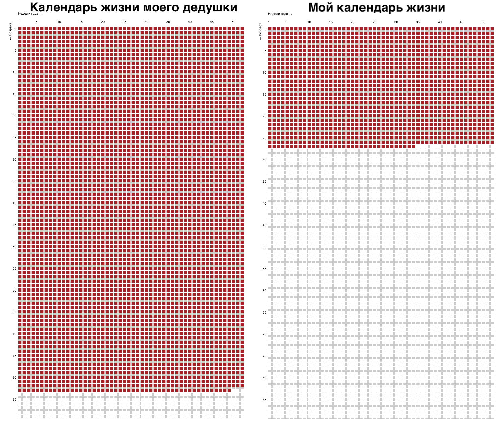

В продолжение предыдущей части Переезд в Латвию. Предыстория: Как мы вообще сюда попали.
Я уже почти 7 месяцев живу в Риге. Пришло время сформулировать свою позицию к этому месту и строить дальнейшие планы. Эта статья будет содержать много текста и будет разделена на две части: в-первой я рассмотрю плюсы и минусы жизни здесь, а во-второй я порефлексирую над дальнейшими планами.
Ретроперспектива
Для начала расскажу о некоторых фактах-минусах жизни в этой стране:
- Местные банки не открывают счет, требуя за рассмотрение кандидатуры от 100 до 250 евро. Они это называют отсутствием резиденства. А если быть точнее их формулировка: без постоянного вида на жительство (ПМЖ) или гражданства. Тоесть несмотря на то, что я резидент этой страны, плачу здесь налоги, официально зарегистрирован, трудоустроен, мне даже в один из банков пенсию начисляют. Я не могу открыть счет без этого наглого побора. В целом это очень хорошо показывает открытость этой страны к приезжающим налогоплательщикам. И учитывая общую ситуацию с экономикой в стране показывает идиотизм правительства.
- Нацисты в правительстве (своих же русскоговорящих граждан называют окупантами), борьба с русским языком на государственном уровне. Я не особо хочу вдаваться в подробности, просто скажу, что люди здесь адекватные и в обществе я не встречал таких трусов (имею ввиду боязни русской культуры и её потенциального преобладания на латвийской) или просто конченых. Но, наверное именно этот пункт самый критичный для меня. Я бы не хотел, чтобы мои дети росли в стране, где решения принимают нацисты и люди обреченные на маразм.
- Неадекватные ценники на коммунальные платежи, я плачу 450 евро за аренду и 250 евро за коммунальные услуги. Учитывая отказ от российского газа ожидается рост отопления на 100 с лишним процентов в этом году.
- Объективно плохой сервис.
- Доставка не соответствует приемлемому соотношению цены / качества.
- Про банковский сектор лучше ничего не говорить. Это пиздец. Немного спасают литовские сервисы Revolut и Paysera, но им до Тинька как до космоса.
- Компании не работают по выходным. У меня сложилось понимание, что предприниматели здесь бракованные.
- Законы защиты прав потребителей просто ужасны. Случай из жизни, купили кроссовки, они разошлись по шву, в лучшем случае через 2-3 недели магазин предоставит право на обмен на такую же или большую сумму. Возврат денег невозможен. Есть исключение, при интернет-заказе можно вернуть в течении 2х недель без объяснения причин, но все остальное не работает. Продолжая, нет понятия публичной аферты, а также по закону ты не можешь скажем сфоткать что-то в магазине только с разрешения собственника. На деле с этим можно жить, но порой клинит от нарушения моих прав (к которым я привык).
- При трудоустройстве на работу требуется обязательный медосмотр, наверное в этом есть рациональное зерно, но не в случае когда ты программист с полной удалёнкой.
- Большие налоги при работе по найму и НДС. А также завышенные налоги на недвижимость (хотя меня больше удивляет сам их факт, как показатель отчуждаемости имущества). Налог на любой автомобиль – это налог на роскошь (вдумайтесь), кстати, поэтому дороги за пределами города, как в Самаре в 2000 году.
- Двуличие властей Евросоюза: все говорят о том, что Европа это демократия и соблюдение свобод. На равне с этим, Латвия ничем не отличается от России, в том что также ограничивает свободу интернета. Просто взяли и заблокировали Яндекс, все начиная от такси до веб сервисов. Заблокировали кучу русскоязычных ресурсов. А русскоязычных людей задерживают без объяснения причин на 9 мая у памятника в парке Победы 🤦
Теперь факты-плюсы:
- Латвия очень крутая страна для россиян с точки зрения релокации, тк на самом деле это та же Россия, просто с другими законами. Ты приезжаешь и ты сразу местный, не нужна адаптация. Редко кто не знает русского. К сожалению, с русской культурой и языком ведётся активная борьба, а так Латвия могла бы стать тем местом, куда бы ехали квалифицированный кадры из России. Из смешного сейчас приехало много украинцев, и теперь в Риге количество русскоязычных больше, чем латышей 😃
- Красивая архитектура и отсутствие перманентного мусора на улицах. Я немного поездил по стране и скажу, что здесь действительно красиво.
- Вид на жительство открывает возможности свободно перемещаться по Шенгенской зоне.
- С текущей ситуацией на Украине местное резидентство даёт возможность избегать ограничений направленных на россиян.
- Географически близко до России, это не может не радовать, когда авиасообщения нет, но есть автобусы до Питера и Москвы. Вечером садишься, на утро уже на месте. А также есть возможность перевезти вещи на машине.
- Хорошая ипотека, по крайней мере на текущий момент в районе 2.5%. Можно позволить купить себе дом или большую квартиру в историческом центре.
Если подытожить то, все основные минусы являются следствием политики латвийского правительства. А плюсы в долгосрочной перспективе не покрывают минусов. Я бы не хотел поддерживать такой режим своими налогами.
Рефлексия над дальнейшими планами
Я достаточно пожил на перекладных и пришел к выводу, что хочу обзавестись своим домом. И приготовиться к следующему этапу в моей жизни. Главный вопрос который я себе сейчас задаю: где же им обзаводиться, если Латвия мне не подходит?
Есть два рациональных пути: сменить страну на другую в ЕС или вернуться в РФ.
Я не хотел бы возвращаться, тк действительно есть ощущение, что на пол пути бросать не круто. Имею ввиду те возможности, которые у меня есть, есть далеко не у каждого и было бы умно довести дело до конца - получить ПМЖ или паспорт какой-то. Кстати ПМЖ можно получить уже через 4 года, что на самом деле не так уж и много. Однако я бы не хотел становиться заложником чужих мечт и желаний.
Релокация даёт тебе возможность сравнить места где ты жил. И буду честным, те вещи из-за которых я уехал из России не изменились:
- Это общество и порождаемые им органы власти => политика (имею ввиду всё, начиная с благоустройства двора, заканчивая тем, что происходит на Украине).
- Материальные блага: финансовая стабильность, свобода перемещения, существование каких-то сложившихся комьюнити вроде тех же хакерспейсов чуть ли не в каждом европейском городе или комьюнити вокруг некоторых европейских университетов.
- Собственное ощущение правильного места и времени, имею ввиду собственного развития и ощущения, что ты не завис в болоте самого себя и своих увлечений. А находишься где-то, где тебе есть что еще впитать.
Однако очень опасно так судить, потому что восприятие в действительности может не зависеть от места нахождения.
Но при всём при этом есть и очень важный минус того, что я не в РФ.
Как-то я увидел выпуск Топлес про длину жизни (очень советую посмотреть). А теперь посмотрите на календарь жизни моего дедушки и мой календарь.

Каждая полоска это год. Каждый квадратик - неделя. Весь календарь 90 лет.
И если смотреть на всё это под тем, сколько осталось моим родным, а затем разделить это на количество встреч 1-2 в год, то складывается не такой позитивный выбор. И его нужно сделать.
Менее значимо, но всё же сюда можно добавить друзей. Я не отрицаю, что новых друзей можно найти, вопрос решаем, и мне очень повезло, что я в Латвии. Однако переедь я куда-то в другое, более далекое, место, разность культур и языковая граница так или иначе будет сказываться на том, как много и на сколько близких друзей у меня будет. Хотя на этот счет я больше переживаю за свою жену. Тк я относительно легко завожу новых знакомых, а ей из-за языкового барьера это даётся сложнее.
И вот такая картинка получается. Поэтому я вижу ничего зазорного в возвращении, тут нужно поймать баланс между своими желаниями и взглядами. Буду честным с собой и с вами, я не готов сделать этот выбор сейчас. Пожалуй, в этом году я возьму некоторую паузу в принятии решений и сосредоточусь на жизни в тех условиях как есть. Попутешествую немного.
Всем peace 🤘